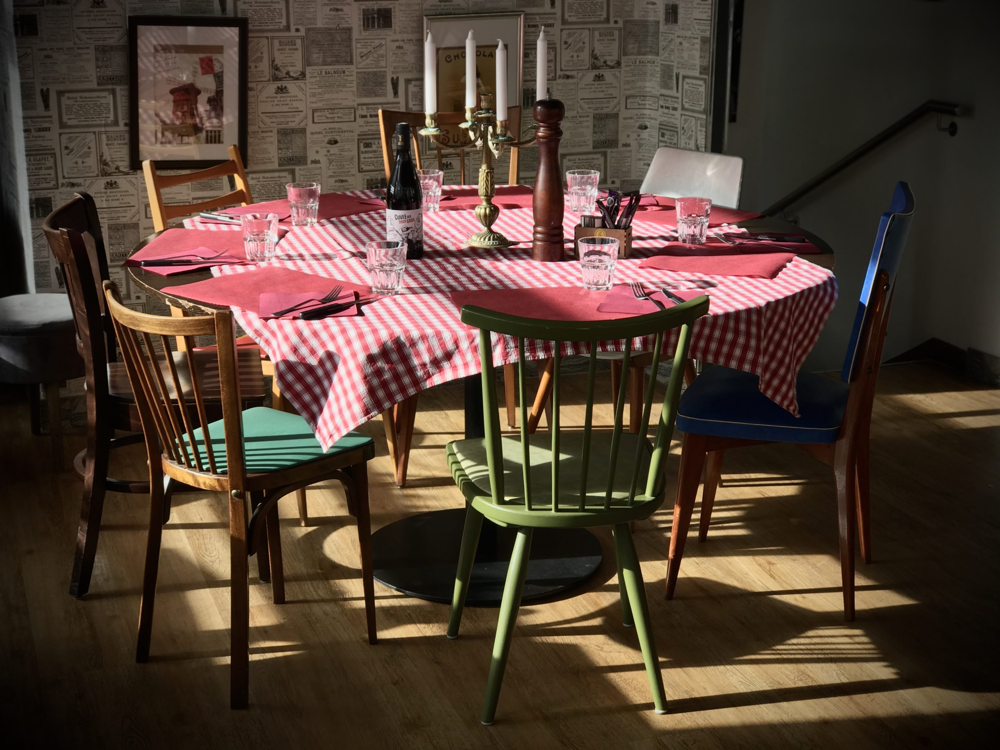
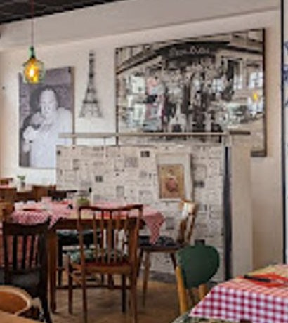
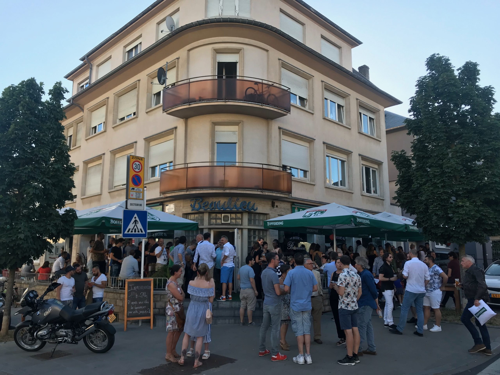
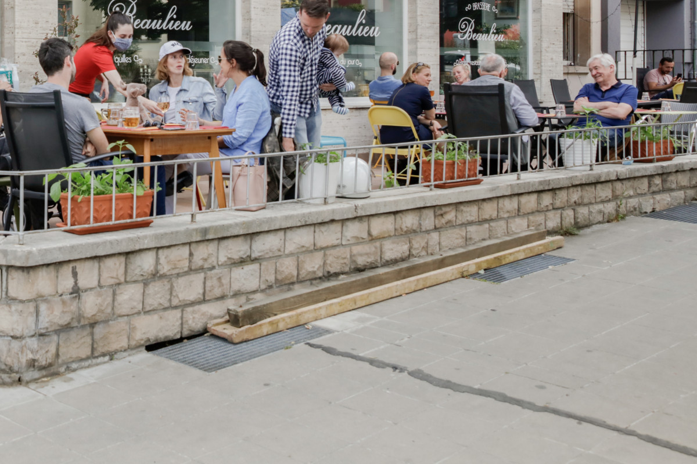

Nappes vichy rouge et blanc sur bois miel, chaises chinées dépareillées, murs crème en papier journal et posters de Paris, une grande ardoise à la craie au-dessus du bar. On vient en famille, entre voisins, entre amis.

La table dressée — vichy rouge, laiton, lumière du jour.
La planche apéritif, à partager sur bois brut.
La cave — une belle sélection, dont des vins bio.
Au menu
La carte, à l'ardoise
Cuisine de brasserie généreuse et de saison. Carte tournante — demandez les suggestions du jour.
Entrées & à partager
Plateau apéritifà confirmer
Poireaux sauce gribicheà confirmer
Salade composéeà confirmer
Vins & boissons
Sélection de vins dont vins bio & natureà la carte
Bière pression Bofferding / Jupilerà la carte
Menu du jour midi en semaineà confirmer
Les plats
Cordon Bleuà confirmer
Entrecôte, beurre maître d'hôtelà confirmer
Tartare de bœufà confirmer
Cassouletà confirmer
Blanquette de veauà confirmer
Hachis Parmentierà confirmer
Burger pouletà confirmer
Burger végétarienà confirmer
Suggestion
Le plat du jour
Le marché du jour, écrit à la craie sur l'ardoise. Demandez à votre serveur la suggestion du chef.
Prix indicatifs · carte de saison · à confirmer

Le portrait du chef, sur le mur en papier journal.
Depuis (env.) 1959 — à confirmer
Notre histoire
Depuis (environ) 1959, la Brasserie Beaulieu est l'adresse incontournable du quartier Bonnevoie. Reprise avec passion par Cyrille Schneider et son équipe enthousiaste, elle propose une cuisine de brasserie généreuse et sincère — cordons bleus, entrecôtes, cassoulet, tartares et plats du marché tournants.
Le tout dans une atmosphère chaleureuse, sans chichi, entre famille et fête. Une belle terrasse ensoleillée et une sélection de vins soignée (dont des vins biologiques) complètent ce bistrot de quartier devenu une référence pour toute la ville.
Cyrille Schneider & l'équipe
La terrasse & infos pratiques
Au soleil, rue Félix de Blochausen

La façade et ses parasols verts, côté rue.

La terrasse : muret, herbes et verre gravé.
Horaires
Lundi10:00 – 01:00
Mardi10:00 – 01:00
Mercredi10:00 – 01:00
Jeudi10:00 – 01:00
Vendredi10:00 – 01:00
Samedi10:00 – 01:00
Dimanche10:00 – 01:00
Cuisine env. jusqu'à 21:45 · horaires à confirmer (jeudi variable)
Nous trouver
25 Rue Félix de Blochausen 1243 Bonnevoie, Luxembourg